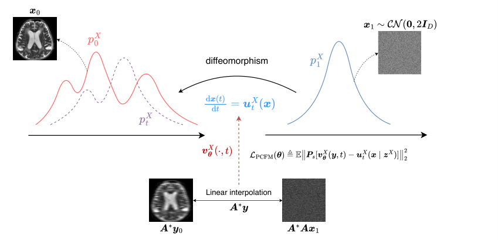
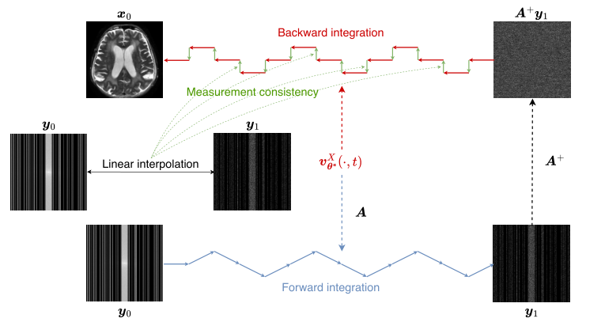

PAPER STUDY 03 / UNSUPERVISED MRI
不要全采样真值，
也要重建出整幅图像。
训练集里没有一张全采样 MRI，只有每次扫描少测了一部分的 k 空间。生成式先验通常要先在真值上训练，这条路因此走不通。UPMRI 换了两个起点：把流匹配的回归误差投影到掩膜看得见的子空间，再用 GSURE 把目标函数里那个未知的真值换成由测量驱动的估计；推理时在测量空间与图像空间之间来回积分，每一步都补一次数据一致性。
本站重绘示意，不是论文原图，也不是本站生成的重建结果。
arXiv:2512.17493v1 · eess.IV · 2025-12-19 提交
资助：EPSRC TrustMRI [EP/X039277/1]
阅读判断：值得精读。理论链条完整（投影目标 → 最优解 → 测量空间向量场 → 双空间循环），数字在 4×/8× 下都给出了；同时有三处必须带着怀疑读的地方：投影只能用 CG 近似、时间系数在正文与实现细节里不一致、以及没有公开代码。
故事从一次“没测完”的扫描开始
做一次 MRI 的时间，直接正比于要采集多少个 k 空间数据点。为了快，机器只测一部分：这次测到的 k 空间位置，下一次可能测别的，于是每次扫描的数据都不完整。人眼拿到的不是“缺了几个像素的照片”，而是一组频域测量——有些方向根本没被看过。
重建要回答的问题是：什么样的图像，经过同样的采集过程，会产生这些数据？多线圈（并行 MRI）帮了一把：每个线圈有各自的空间敏感度，相当于对同一份解剖结构各拍了一张加权视图，这些冗余可以补回一部分丢失的空间信息。论文把这一整套过程写成一个算子 Aₛ，并把看不到的方向正式称作秩亏与零空间。论文 §III-A，Eq.2–3；Lemma 1
论文 Eq.2–3。s 索引掩码的随机性，因此同一位患者在不同扫描里见到的是不同的 Aₛ。
- x₀
- 要重建的全采样复值图像，D 维；论文的边界约定是 t=0 对应数据、t=1 对应噪声。
- y₀
- 多线圈欠采样 k 空间测量，长度 Cd；d≤D，加速倍率 α=D/d>1。
- Mₛ,F,S_c
- 欠采样掩码 / 离散傅里叶变换 / 第 c 个线圈的敏感度对角阵（由 ESPIRiT 估计）。按从右到左的顺序作用。
- e
- 测量噪声，CN(0,σ₀²I_Cd)；论文训练时假设 σ₀=10⁻²。
论文对一个前提写得很明确：数据集中每个 k 空间位置都至少被采到过一次（Lemma 1）。有了它，掩码上的平均投影 Eₛ[Pₛ] 才可逆，后面用 GSURE 消掉真值的推导才站得住。实践里这靠随机掩码来近似满足。
自监督：把手上的测量再切一刀
SSDU 家族的思路是把已经很少的欠采样 k 空间分成互不相交的两半，用一半去预测另一半。好处是不需要真值，代价是训练时又丢了一部分本来就不够的数据，8× 这种高加速下更明显（Table I 里 SSDU 三行的量级可以印证）。
无监督：所有的测量都用上
论文把“不额外再切分、直接用全部欠采样测量”称为无监督（unsupervised）。难点在于目标函数里通常显式含有真值 x₀，必须用统计估计把它换掉；论文的做法就是 PCFM + GSURE。
真值拿不到，先验从哪里来？
条件流匹配（CFM）的做法很直白：给样品对 (x₀,x₁) 指定一条可写出的路径，例如直线插值 xₜ=aₜx₀+bₜx₁，于是条件速度场就是 uₜˣ(x|zˣ)=aₜ'x₀+bₜ'x₁；让网络去回归它，就能学到一个把噪声分布搬运成数据分布的速度场。整个模型满足连续性方程：密度沿速度场移动，概率守恒。论文 §III-B，Eq.4–6
问题就出在这一步：条件速度场里显式出现 x₀。没有全采样真值，这一项就取不到，监督信号无从构造。论文的切入点是把视角换到测量空间：既然只有 y₀，那就不要指望在整个图像空间上都对齐，而只要求网络在“掩膜看得见的那部分方向”上对齐。
论文 Eq.4：连续性方程。它说明“速度场搬运概率密度”这件事是自洽的，也是后面把测量空间的流与 PCFM 解接起来的工具。
- pₜˣ
- X 空间（图像空间）在时刻 t 的密度；t=0 是数据分布 p₀ˣ，t=1 是基分布 p₁ˣ=CN(0,2I_D)。
- uₜˣ
- X 空间的边缘向量场；CFM 用条件速度场的加权期望构造它，见 Eq.5。
还有一个不易察觉的前提：测量空间的条件路径 pₜʸ(y|zˣ) 是高斯 CN(y|Aₛ(aₜx₀+bₜx₁), aₜ²σ₀²I_Cd)，其中 y₁≜Aₛx₁ 是投影后的噪声。也就是说，测量空间的“噪声端点”本身也要过一遍前向算子；这不是把噪声直接当作 k 空间。
PCFM：只监督看得见的子空间
既然真值看不见，论文就把回归误差先投影一次。定义 Pₛ≜Aₛ⁺Aₛ——到 Aₛ 行空间（等价地 Aₛ* 的值域）的正交投影，再要求网络输出与条件速度场的差在投影之后尽可能小。直观地说：这不要求网络在掩码根本没看过的方向上也猜对，只要求它在测量能“看见”的方向上对齐。论文 §IV-A，Eq.8
代价随即出现：并行 MRI 下 Pₛ 没有闭式解。论文利用 P=A⁺A=(A*A)⁺A*A 且 A*A 半正定这一关系，把投影落到一次线性系统求解上，用共轭梯度（CG）数值近似——训练时 10 步、推理时 30 步。这就是“多线圈”相对“单线圈”要多付的那一笔账：单线圈的加权投影可以解析写出，多线圈只能迭代逼近。
论文 Eq.8。与 Eq.6 的 CFM 目标相比，只多了一个投影算子 Pₛ，但意义完全不同：监督发生的空间被限制在测量可见子空间里。
- v_θˣ(·,t)
- 网络，输入测量空间路径（实现上取伴随形式 Aₛ*yₜ），输出 X 空间的速度场估计。
- Pₛ
- Aₛ⁺Aₛ，到 Aₛ 行空间的正交投影。没有闭式解，用 CG 解 Aₛ*Aₛr=Aₛ*Aₛ[v_θˣ-uₜˣ] 近似。
- zˣ=(x₀,x₁)
- 条件变量；论文取独立耦合 q=p₀ˣ×p₁ˣ。
接下来论文给了这套目标的最优解。它正好是给定测量之后条件速度场的条件期望——也就是真速度场的均方误差最小估计。这句话是整个框架的支点：能从测量里学到的东西，被严格刻画成“真速度场在 𝒴 下的期望”，而不是某个替代品。
论文 Eq.9–10（Prop. 1，证明在附录 A-B）。后一个等号用到线性插值路径下 uₜˣ(x|zˣ)=aₜ'x₀+bₜ'x₁ 与 x 无关这一点。
- qₜ(zˣ|y)
- q(zˣ)pₜʸ(y|zˣ)/pₜʸ(y)，即测量条件下的后验条件变量分布。
- 含义
- 这是 X 空间真速度场的 MMSE 估计：能从欠采样测量里恢复的上限就是它。

掩膜看得见的方向
低频全采、其余按加速倍率随机采样（论文用随机笛卡尔 1D 掩码）。这些位置构成 Aₛ 的行空间，误差在这里被计量，也是数据一致性可以校正的方向。
掩膜看不见的方向
Aₛ 的零空间。论文不要求网络在这些方向上对齐；重建在这些方向上的取值来自学到的先验与 t=1 处的后验采样，不来自测量。
把真值从目标函数里消掉
Eq.8 还留着一个漏洞：蒙特卡洛采样 q(zˣ) 时要用到 x₀，所以目标仍然不可计算。论文借广义 Stein 无偏风险估计（GSURE）做替换：把未知的 x₀ 换成由测量推出的极大似然解 û_MLˣ，同时补一项散度修正，抵消这一步替换带来的偏差。修正项的散度用 Hutchinson 迹估计来算。论文 §IV-A，Eq.11–15；Prop. 2
到这里，训练目标里就只剩下：欠采样测量 y₀、掩码 Mₛ、敏感度图（进 Aₛ）与网络自身。论文的说法是“up to a constant”，即与原来的 PCFM 目标只差一个常数。点击下面的按钮，比较三种目标各自需要什么。
亲手试一下：三种目标，少的是同一件东西吗？
INTERACTIVE / OBJECTIVE COMPARISON有监督 CFM（Eq.6）
目标直接在 X 空间比较网络输出与条件速度场。需要每一张训练图像的全采样真值 x₀，训练数据因此必须是大规模全采样 MRI 数据集——这正是论文要绕开的临床瓶颈。
关键：一个投影都不加，因为每一项都“看得见”。
论文 Eq.13（Prop. 2，证明在附录 A-C）。第一项把回归目标换成“对极大似然解的回归”，第二项是 GSURE 的散度修正——它的存在解释了为什么这个估计是无偏的。
- 第一项
- 在网络输出与 û_MLˣ 之间度量误差，仍然过投影 Pₛ，因此不依赖 x₀。
- 第二项
- 散度修正，系数 2aₜaₜ'σ₀²（按原式写作 (2aₜ)/(aₜ')σ₀² 的等价分式形式）。它与网络对输入的梯度有关，是训练变贵的主要原因。
- q(zʸ)
- q(y₀)q(y₁)=q(y₀)E_q(x₁)[p(y₁|x₁)]，由前向模型与蒙特卡洛采样得到。
论文 Eq.11、Eq.14。Eq.11 给出双空间条件速度场之间的线性关系 uₜʸ(y|zʸ)=Auₜˣ(x|zˣ)+aₜ'e₀，这里对它取极大似然解。
- Cₜ
- 测量噪声协方差（正比于 σ₀²）；噪声越大，这个“反推”就越保守。
- uₜʸ
- 测量空间的条件速度场，由 Eq.12 可从插值路径 yₜ 与 y₁ 直接写出。
论文 Eq.15。期望用蒙特卡洛近似，因此每次迭代要多算一次“对输入的梯度”，并且这个随机向量 b 本身也要投影到 Pₛ 的范围内。
- b
- CN(0,Pₛ) 的复高斯向量：同样是“只落在测量可见子空间里”的噪声。
- 代价
- 复值实现的 Jacobian-向量积通常要拆成双实通道，是最容易写错、也最影响训练速度的一段。
双空间循环：一致性不是事后补的
先验学好了，推理还缺一块：怎么从一次新的欠采样测量 y₀ 得到一个具体重建？论文走的是“双空间循环”。先在测量空间把 y₀ 沿着测出来的向量场前向积分到 t=1，得到一个“测量空间的噪声端点” y₁；再回到图像空间按后验采样出 x₁，最后反向积分回 t=0 得到 x₀。每一步都插入一次数据一致性校正，而不是最后才修一次。论文 §IV-B，Lemma 2–4，Prop. 3–4；Algorithm 1
中间的桥是 Proposition 3：把 Lemma 2（测量空间向量场 = 前向算子作用在最优解上，再减去带系数的分数项）与 Lemma 3（同一个向量场与分数函数的关系）联立，对消掉分数函数，就得到“uₜʸ 完全由 v_θ^*ˣ 表达”的式子。这一步是整篇论文最技术性的地方：它让测量空间的前向积分不需要额外的网络。
论文 Eq.21（对 aₜ=1-t, bₜ=t）。当 Cd>D 时用左乘 A* 的版本（Eq.22），把求逆的矩阵从 Cd×Cd 降到 D×D。
- 第一项
- A v_θ^*ˣ：把图像空间的速度场搬到测量空间，是主要项。
- 第二项
- 随噪声水平变化的修正项，含一个待求逆的矩阵；t→0 时 cₜ 的系数会放大，数值实现要小心。
- σ₀
- 论文取 10⁻²。它不只影响训练目标，也直接进入推理的向量场。
测量空间前向积分
从观测 y(0):=y₀ 出发，按 t=0,…,(T-1)/T 逐步加 (1)/(T)uₜʸ(y)（Prop. 3）。T=10 步后得到 y(1)，它对应“测量空间中的噪声端点” y₁。这一段的每一步都要调用一次网络，因此是前 10 次 NFE。
论文 Algorithm 1 第 1–2 行；Prop. 3 / Eq.23
亲手试一下：插值路径上的 t
INTERACTIVE / PATH POSITION论文把插值路径定义为 y(t)≜aₜy₀+bₜy₁（Eq.26 下方）。拖动滑杆改变 t，看两个端点各占多少，以及前向段与反向段分别处在哪一段区间。这里只显示论文给出的定义，不含任何实测数值。
左侧深色是测量端点 y₀ 的权重，右侧浅色是噪声端点 y₁ 的权重。前向段从 t=0 走到 t=1 生成 y₁，反向段再从 t≈1 走回 t=0 生成 x₀，两段共用同一条插值路径。
论文 Eq.24–25：在 p(x₁)=CN(0,2I_D) 与 y₁=Ax₁ 的假设下，p(x₁|y₁)=CN(A⁺y₁, 2(I-A⁺A))。
- 第一项
- A⁺y₁：由测量确定的部分，把 y₁ 搬回图像空间。
- 第二项
- (I-A⁺A)z₁：落在零空间里的随机部分。它使重建带随机性，也因此同一份测量可以给出不同的重建样本。
论文 Eq.28。Prop. 4（Eq.27）说明理想情况下 σ₀→0 时 Ax(t)=y(t) 自动成立，因此这一项是用来补离散化误差的；A⁺ 同样由 CG 近似。
- (Ax(t)-y(t))
- 当前图像与插值测量之间的差，落在测量空间。
- 与 DDS 的区别
- DDS 在干净估计上用 CG 解一致性子问题；这里的一致性是在反向积分的每一步之后做一次投影式校正。
数字：4× 与 8× 下的证据
论文在 NYU fastMRI 脑 T2 与 CMRxRecon 2023 心脏 T1/T2 mapping 上评测，监督类别分三档比较：需要全采样真值的有监督（MoDL、DDNM+、OT-ODE、PnP-Flow）、额外切分测量的自监督（SSDU、Weighted SSDU、Robust SSDU，骨干换成 10 层展开的 VarNet）、以及使用全部欠采样测量的无监督（REI、MOI、ENSURE、GTF²M，再加本文 UPMRI）。指标是 PSNR 与 SSIM。论文 §V-C，Table I
TABLE I–II / PUBLISHED VALUES
PSNR · 条形以 0 dB 为起点；精确值见标签与下表
数值为论文 Table I / Table II 的原表转录，本站未复现。条形保留论文的监督类别顺序（有监督 → 自监督 → 无监督），UPMRI 单独高亮。
UPMRI 在脑数据 4× 为 PSNR 42.19 dB、SSIM 0.983；8× 为 35.08 dB、0.948。
8× 下 PSNR 略低于有监督扩散 DDNM+（35.24 dB），但 SSIM 明显更高（0.948 对 0.920）——论文正是这样表述的，不要读成“全面超过”。
| 监督类别 / 方法 | 脑 4× PSNR | 脑 4× SSIM | 脑 8× PSNR | 脑 8× SSIM | 心脏 4× PSNR | 心脏 4× SSIM | 心脏 8× PSNR | 心脏 8× SSIM | NFE ↓ |
|---|---|---|---|---|---|---|---|---|---|
| — / Zero-Filled | 28.28 | 0.815 | 24.44 | 0.730 | 27.01 | 0.769 | 26.11 | 0.747 | N/A |
| 有监督 / MoDL | 39.71 | 0.970 | 32.32 | 0.916 | 41.79 | 0.979 | 36.36 | 0.943 | 1 |
| 有监督 / DDNM+ | 40.00 | 0.938 | 35.24 | 0.920 | 44.93 | 0.977 | 39.60 | 0.953 | 100 |
| 有监督 / OT-ODE | 33.95 | 0.907 | 28.86 | 0.852 | 35.65 | 0.922 | 32.08 | 0.870 | 100 |
| 有监督 / PnP-Flow | 37.92 | 0.951 | 32.85 | 0.913 | 39.77 | 0.963 | 35.13 | 0.924 | 100 |
| 自监督 / SSDU | 28.13 | 0.831 | 26.61 | 0.792 | 32.64 | 0.888 | 29.23 | 0.811 | 1 |
| 自监督 / W-SSDU | 36.09 | 0.939 | 29.72 | 0.870 | 32.11 | 0.872 | 29.82 | 0.831 | 1 |
| 自监督 / R-SSDU | 36.23 | 0.941 | 29.27 | 0.856 | 33.93 | 0.912 | 31.10 | 0.861 | 1 |
| 无监督 / REI | 21.59 | 0.683 | 21.62 | 0.715 | 23.65 | 0.736 | 26.62 | 0.716 | 1 |
| 无监督 / MOI | 30.97 | 0.869 | 25.16 | 0.747 | 40.13 | 0.971 | 31.47 | 0.874 | 1 |
| 无监督 / ENSURE | 32.75 | 0.899 | 27.12 | 0.800 | 34.57 | 0.918 | 30.27 | 0.849 | 1 |
| 无监督 / GTF²M | 33.99 | 0.916 | 28.40 | 0.852 | 33.67 | 0.918 | 31.33 | 0.881 | 20 |
| 无监督 / UPMRI（本文） | 42.19 | 0.983 | 35.08 | 0.948 | 52.39 | 0.994 | 40.50 | 0.974 | 20 |
| 监督类别 / 方法 | 耗时 (ms) | NFE ↓ |
|---|---|---|
| 有监督 / MoDL | 58 | 1 |
| 有监督 / DDNM+ | 1000 | 100 |
| 有监督 / OT-ODE | 1750 | 100 |
| 有监督 / PnP-Flow | 938 | 100 |
| 自监督 / SSDU · Weighted SSDU · Robust SSDU | 19 | 1 |
| 无监督 / REI | 19 | 1 |
| 无监督 / MOI · ENSURE | 58 | 1 |
| 无监督 / GTF²M | 1563 | 20 |
| 无监督 / UPMRI（本文） | 500 | 20 |
三段值得单独拎出来的结论。第一，优势随加速倍率放大：8× 时 SSDU 家族掉到 26–29 dB（脑），而 UPMRI 仍保持 35.08 dB，说明“把测量再切一半”的代价在高加速下最疼。第二，参数研究给出了默认值：积分步数 T 从 2 到 50，SSIM 在 T=10 之后基本走平、PSNR 仍有轻微增益，论文为省算力取 T=10（对应 20 NFE）；测试期 CG 步数 k 从 10 到 50 单调改善、约在 30 饱和，故取 k=30。第三，泛化只在同一台“加速度尺子”上被证明：4× / 8× 交叉评测性能相近；在未见过的 10× 与 12× 上，8× 训练的模型更好（10× 时 SSIM 0.964 / PSNR 38.70 dB，对比 4× 训练模型的 0.950 / 36.94 dB）。
fastMRI 脑 T2 切片的训练 / 验证 / 测试数。真值由全采样 k 空间做 SENSE 合并得到，敏感度图用 ESPIRiT。
CMRxRecon 2023 心脏 T1/T2 mapping 切片的划分。心脏是论文里增益最大的数据集。
ADM U-Net 从零训练 100K 步（AdamW，lr 1e-4，权重衰减 0.1，每 100 步 EMA 0.99）；CG 步数训练 10、推理 30。
复现与审计：这次没有代码可以跟
与前几篇精读不同，这一篇没有官方实现可查：arXiv 正文与附录都没有代码链接，第一作者的 GitHub 个人页与公开仓库里没有 UPMRI（也没有前作 GTF²M）的实现，仓库搜索同样为空。核查日期 2026-10-13。核查记录见来源清单
所以这一节的写法是“按论文自实现时要先钉住什么”，而不是“跟着哪个文件读”。下面五项按你实际会踩到的顺序排列。
- 先确定时间方向，再写任何一行插值§III-B 与 Prop. 3 的推导前提是 aₜ=1-t, bₜ=t（t=0 是数据、t=1 是噪声），而 §V-B 的实现细节写的是 aₜ=t, bₜ=1-t。两者是同一条路径的相反取向，原文没有解释这处差异；先把它钉住，否则投影、前向积分与后向积分会整体反向。
- 把复数 CG 写对，并明确“解哪个系统”投影用 P=A⁺A=(A*A)⁺A*A，落到系统 Aₛ*Aₛr=Aₛ*Aₛ[v_θˣ-uₜˣ]；数据一致性用 A⁺、后验采样用 (I-A⁺A)。训练 10 步、推理 30 步的 CG 预算直接决定投影准不准，这也是论文 §VI 承认的额外开销。
- GSURE 的两项必须成对实现只写“对 û_MLˣ 的回归项”而漏掉散度修正项（Eq.15，噪声 b~CN(0,Pₛ)），就不是无偏估计。复值下这需要一次对输入的 Jacobian-向量积，通常拆成双实通道。
- 核对“无监督”的输入清单训练不需要全采样图像，但需要：欠采样多线圈 k 空间、掩码 Mₛ、ESPIRiT 敏感度图。评估仍与 SENSE 参考比；掩码协议是“低频全采 + 其余均匀随机”，ACL 数沿用 [20]、[31] 的实现。任何一项换了，数值都会动。
- 先做推理级验证，再谈训练最小可验证闭环是：用 T=10 的循环采样跑通一遍，检查每步 Ax(t) 与插值 y(t) 的残差（Prop. 4 的预言），再检查 T 与 k 的曲线是否重现 Fig. 6 的趋势。训练级复现需要 ADM U-Net + 100K 步 + 复数 CG 与 Hutchinson 迹估计，而论文未交代训练硬件与批量大小。
你应该从它带走什么？
这篇论文最可迁移的思想是“先决定在哪里监督，再决定用什么目标”。生成式先验的瓶颈通常被描述成“数据不够”，UPMRI 把它拆成两个可操作的问题：误差应该在哪个子空间里计量（投影 Pₛ），未知真值应该被什么替代（GSURE 的极大似然解 + 散度修正）。这两个问题比“换更大的模型”更容易回答，也更容易验证。
第二个值得带走的设计是推理与训练可以用同一套数值工具：CG 既用来近似训练目标里的投影，也用来近似推理里的伪逆与矩阵逆。这让“多线圈”这一层复杂度只增加一个可复用的算子。
当每个 k 空间位置的采样概率都不为零、但极不均匀时，
投影 Pₛ 的数值近似误差会怎样影响不同区域的先验？
这是本站提出的研究问题，尚未做新颖性检索。起步实验不需要重训：固定一份公开欠采样数据与一个已训练的流匹配模型，把 CG 步数从 10 扫到 50，同时记录（a）投影残差，（b）重建指标，（c）不同掩码密度下指标变化的斜率。如果“投影更准”与“图像更好”在高加速、非均匀掩码下出现分叉，那就是一个可以被验证的改进切口。
合上论文前，检查自己真的懂了没有
01 / 为什么不能直接拿欠采样 k 空间去算 CFM 的目标函数？
CFM 的条件速度场 uₜˣ(x|zˣ)=aₜ'x₀+bₜ'x₁ 里显式含真值 x₀，路径采样也需要它。PCFM 的解法是先用投影 Pₛ 把误差限制在测量可见子空间，再用 GSURE 把 x₀ 换成测量驱动的极大似然解并补散度项。
02 / 投影 Pₛ 在物理上到底做了什么？
Pₛ=Aₛ⁺Aₛ 是到 Aₛ 行空间的正交投影，把误差的度量限制在掩膜采到的方向上。它解释了为什么 Lemma 1（每个 k 空间位置至少被采一次）是必要条件：从未被采到的位置在训练中从未被监督。
03 / 为什么散度修正项不能省？
把它省掉就只剩“对极大似然解的回归”，那不是一个无偏的 MSE 估计。论文的 Proposition 2 把无偏性建立在两项之和上；这也是训练比普通回归贵的原因（Hutchinson 迹估计需要额外的 Jacobian-向量积）。
04 / 测量空间的前向积分需要额外训练一个模型吗？
不需要。Proposition 3 把 uₜʸ 完全写成 PCFM 最优解 v_θ^*ˣ 的函数，分数函数在 Lemma 2 与 Lemma 3 的联立中被消掉。所以一次前向积分就是调用一次已有的网络。
05 / 论文说“无监督”，是不是训练里一点真值信息都没有？
训练不用全采样图像，但仍需要欠采样测量、掩码与 ESPIRiT 敏感度图；评估仍与 SENSE 合并出来的参考图像比较。Prop. 4 的 Ax(t)=y(t) 也是 σ₀→0 的极限陈述，离散误差靠 Eq.28 每步补。
06 / Table I 里 UPMRI 是不是在所有格子都最好？
不是。脑 8× 的 PSNR（35.08）略低于有监督的 DDNM+（35.24），论文的说法是 SSIM 上明显更好（0.948 对 0.920）。心脏数据集上它超过所有对照。
沿着证据，回到原文
论文事实、核查事实与本站解释分别标注。公式采用 arXiv v1 的编号；页面图解为本站重绘示意，不假充原文图；指标由已检查的原表转录，非本站实验。本页没有代码块可展示，因为未核实到官方实现。
- 01 / arXiv 摘要与版本记录 ↗英文摘要逐字来源；eess.IV，2025-12-19 提交，v1。
- 02 / arXiv HTML 正文（内容来源）↗§III：前向模型与 Lemma 1，Eq.2–4；§IV：Eq.6–28、Lemma 2–4、Prop. 1–4、Algorithm 1；§V：数据划分、训练细节、Table I–II、Fig. 6–9；§VI：作者自陈的限制；附录 A–B：证明与 CG。核查日期 2026-10-13。
- 03 / arXiv 官方 PDF ↗用于交叉核对表格与图注排版（HTML 版本中的公式以 LaTeX 注释保留，便于精确转录）。
- 04 / 前作 GTF²M（IPMI 2025）↗论文自述的上一版会议工作，单线圈无真值流匹配，也是 Table I 中最接近的无监督竞争者。同样未核实到公开实现。
- 05 / 官方实现核查：未核实到可用实现论文正文与附录无代码链接；第一作者 GitHub 个人页（xzluo97）与公开仓库列表中无 UPMRI / GTF²M；GitHub 仓库搜索 UPMRI、GTF²M 均无结果。核查日期 2026-10-13。因此本页不提供代码导航，笔记中
codeUrl上报为 null。